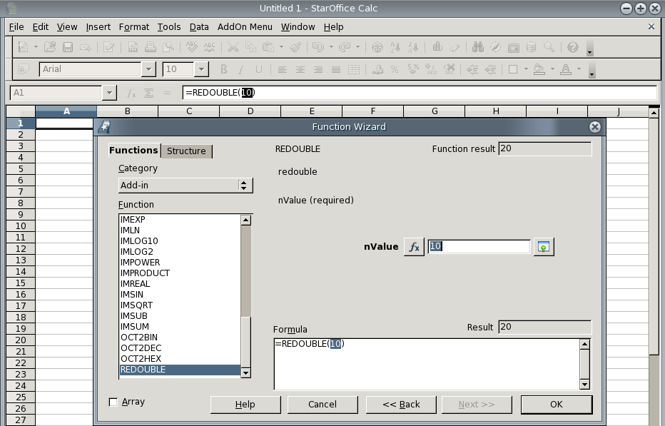

Apache OpenOffice Calc Add-Ins are special extensions for Calc in Apache OpenOffice. Calc Add-Ins provide new built-in functions
for the spreadsheet application which can be used directly in spreadsheet documents, and they are
found in the function dialog box in the application. Add-Ins provide an easy way to add new functions
to the existing functions. For example, you can use Add-Ins to add specialized financial calculation
functions to Calc.
Add-Ins are created as UNO components that implement a special service provider interface for Add-Ins. The
Apache OpenOffice Calc Add-In project wizard abstracts from the specific UNO components and
simplifies the task on the pure implementation of the new functions.
The wizard helps to define all necessary information for new Add-In functions:
Function Name
The implementation function name which is used in the UNOIDL interface definition, in the configuration
file to identify the node section for this function, and when you want to use the Add-In function
programmatically.
Display Name
A human readable function or parameter name which is shown in the user interface of the function dialog box.
This name is localizable and it is common to specify at least an English name.
Description
A human readable description of the function or parameter that is shown in the user interface of the function
dialog box. This description is localizable and it is common to specify at least an English description.
Category
The function dialog box categorizes the functions in different categories and you can select a
predefined category where the the new function should appear later in the function dialog box.
Category Display Name
The category display name is optional. You can only select from a list of predefined categories.
Compatibility Name
Compatibility names are localized names of Add-In functions that are used to import files from other
applications. If, on import, a localized function name is read, this list of compatibility names is used to
find the internal name of the function. For more information about compatibility names please read the
appropriate section in the
Return Type
The return type of the Add-In function. The list provides only valid types. Add-In functions
support only a subset of the UNOIDL types as return types.
Parameter Name
The implementation parameter name which is used in the UNOIDL interface definition. You can
define a localized display name and a description for the parameter as well as for the function itself.
Parameter Type
The parameter type of an Add-In parameter. The list provides only valid types. Add-In functions
only support a subset of the UNOIDL types as parameter types.
Using Add-In functions in Apache OpenOffice
After you have deployed a Calc Add-In extension in an Apache OpenOffice installation you can use it directly from the
built-in function dialog box in Calc.

Select an Add-In function and click Next. Follow the function wizard to parameterize the function and insert
the function into the open spreadsheet document.
Add-In functions can be used in the same way as the regular built-in functions.